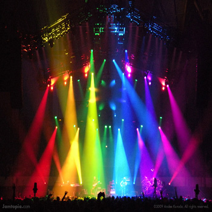
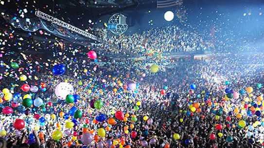
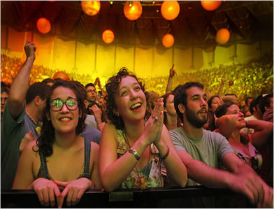
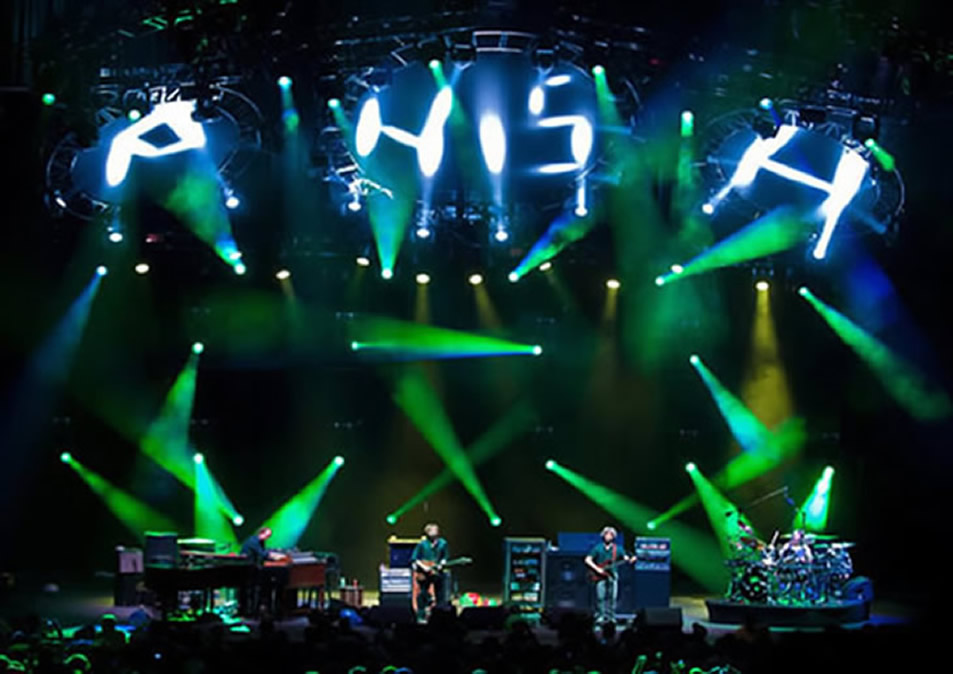

Live Phish
; What It's All About
The driving force behind Phish is the popularity of their concerts and the fan culture surrounding the event. Each a production unto itself, the band is known to consistently change set lists and details, as well as the addition of their own antics to ensure that no two shows are ever the same. With fans flocking to venues hours before they open, the concert is the centerpiece of an event that includes a temporary community in the parking lot, complete with "Shakedown Street": at times a garment district, art district, food court, or pharmacy. For many, one concert is simply a prelude to the next as the community follows the band around the country.
Because Phish's reputation is so grounded in their live performances, concert recordings are commonly-traded commodities. Official soundboard recordings can be purchased through the Live Phish website. Legal field recordings produced by tapers with boom microphones from the audience in compliance with Phish's tape trading policy are frequently traded on any number of music message boards. Although technically not allowed, live videos of Phish shows are also traded by fans and are tolerated as long as it is for non-profit, personal use. Phish fans have been noted for their extensive collections of fan-taped concert recordings; owning recordings of entire tours and years is widespread.
| Home | Band Members | History | Popular Discography | Live |
Live Phish; What it's All About
The driving force behind Phish is the popularity of their concerts and the fan culture surrounding the event. Each a production unto itself, the band is known to consistently change set lists and details, as well as the addition of their own antics to ensure that no two shows are ever the same. With fans flocking to venues hours before they open, the concert is the centerpiece of an event that includes a temporary community in the parking lot, complete with "Shakedown Street": at times a garment district, art district, food court, or pharmacy. For many, one concert is simply a prelude to the next as the community follows the band around the country. Because Phish's reputation is so grounded in their live performances, concert recordings are commonly-traded commodities. Official soundboard recordings can be purchased through the Live Phish website. Legal field recordings produced by tapers with boom microphones from the audience in compliance with Phish's tape trading policy are frequently traded on any number of music message boards. Although technically not allowed, live videos of Phish shows are also traded by fans and are tolerated as long as it is for non-profit, personal use. Phish fans have been noted for their extensive collections of fan-taped concert recordings; owning recordings of entire tours and years is widespread.

The difference between a Phish performance and any other concert goes deeper than the counterculture experience. Diehard fans swap experiences like trading cards, with some songs more common than others. In fact, a number of websites have spawned solely to chronicle each set-list and discuss the rare or unique aspects of every show. And with the rampant spontaneity inherent to Phish, every show is different.
